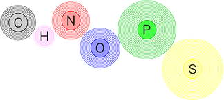
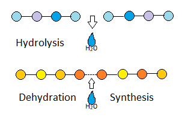

Key Conepts
Organic chemistry The study of organic compounds: compounds that contain carbon.
Biological molecules, or biomolecules are built by joining atoms through covalent bonds.
Major Elements
The six major elements of life are six important elements can be remembered with the acronym CHNOPS:
- Carbon
- Hydrogen
- Nitrogen
- Oxygen
- Phosphorus
- Sulfur
Monomers and Polymers

- Monomers the basic subunit of a macromolecule
- Polymers (or Macromolecules) large molecules made by joining the monomers together.
Creating and Breaking Polymers
- Dehydration synthesis - macromolecules are formed by combining monomers by taking the water out between them.
- Hydrolysis - macromolecules are separate/digested into monomers by “cutting the bonds with water”